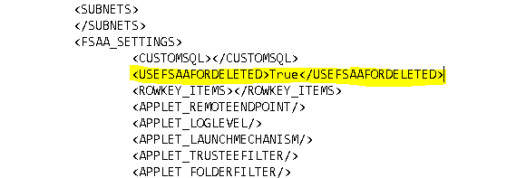

Summary: FSAA | Folders not marked as deleted
Issue: Summary: FSAA | Folders not marked as deleted
Before Fix: Deleted Resources discovered in FSAC scans will cause them to be come not marked as deleted in Tier 1.
After fix: Add hidden XML option to always use FSAA for marking resources as deleted. See Comments for more details.
Submitted by:
Michael Burrofato
Affected Versions:
8.2
Affected Module:
SA - DC - FSAA
Dev Ticket:
- SAFS-806
- DCFSAA.dll 8.2.1038
- FSAASrv.dll 8.2.1038
- Stealthbits.StealthAUDIT.DataCollectors.FSAA.dll 8.2.1038
- Stealthbits.StealthAUDIT.DataCollectors.FSAA.RPCClient.dll 8.1.0
Hotfix
YouTrack/Escalations
- SAFS-806/Escalation 8057, 7822, 29158, 29216
Customers
- Westfield Insurance Companies (Ohio Farmers)
- ANZ
- HPS Investment Partners
- Meggitt SA
Cumulative List of fixes included since Service Pack:
- SAFS-15752 Exclude and throw warning about files with malformed names similar to the way we treat files with trailing spaces in the name
- SAFS-806 FSAA | Folders not marked as deleted
Changes since last Hotfix
- N/A
Comments:
The following fix requires the Job XML for ALL FSAA scans and bulk import jobs (permissions, activity, and Sensitive Data) to be manually modified. See screenshot below for the syntax required.

Instructions:
- Unblock the hotfix zip file in the windows property dialog, if an unblock button exists there.
- Close all instances of StealthAUDIT (check task manager under processes for all users)
- Update all DC files in your %SAInstallDir%DC folder
- Update all PrivateAssemblies in your %SAInstallDir%PrivateAssemblies folder.
- Run the 'Update Proxy Service' query under the Maintenance tab in the FSAA data collector against your proxy servers (if running proxy service).
ADDITIONAL STEPS IF YOU HAVE DELETED RESOURCES NOT MARKED AS DELETED IN TIER 1
- Drop the contents located in the FSAA folder of this hotfix into the FSAA folder of your local SA Console.
- Open an elevated command prompt and change directory to FSAA folder.
2) To update a single host: FSAAUpdateDeletedUSN.exe
- Run FSAA permission bulk import against the affected hosts.
Product: StealthAUDIT
Module: SA - DC - FSAA - Activity;SA - DC - FSAA - DFS;SA - DC - FSAA - Permissions
Versions: 8.2
Dev Ticket: SAFS-806
Resolved In: - DCFSAA.dll 8.2.1038
- FSAASrv.dll 8.2.1038
- Stealthbits.StealthAUDIT.DataCollectors.FSAA.dll 8.2.1038
Other dependencies included:
- Stealthbits.StealthAUDIT.DataCollectors.FSAA.RPCClient.dll 8.2.0
Salesforce Article ID: 2185